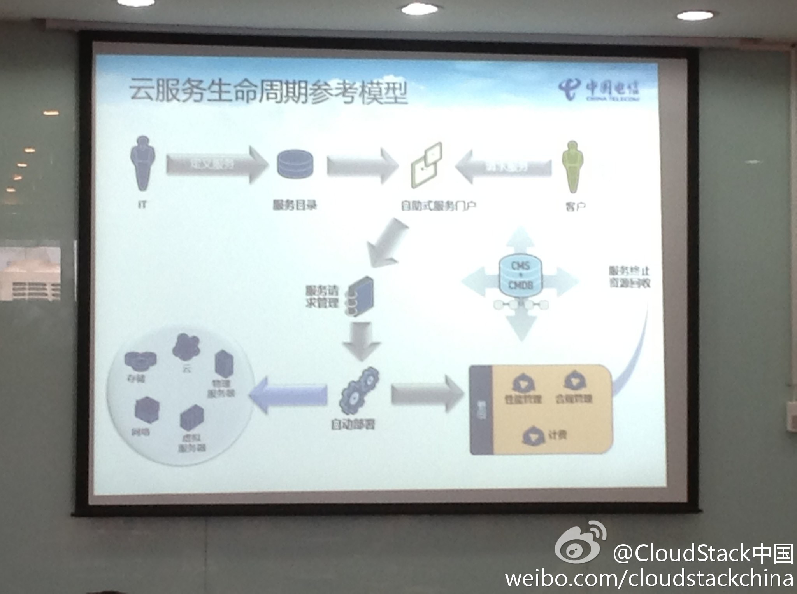
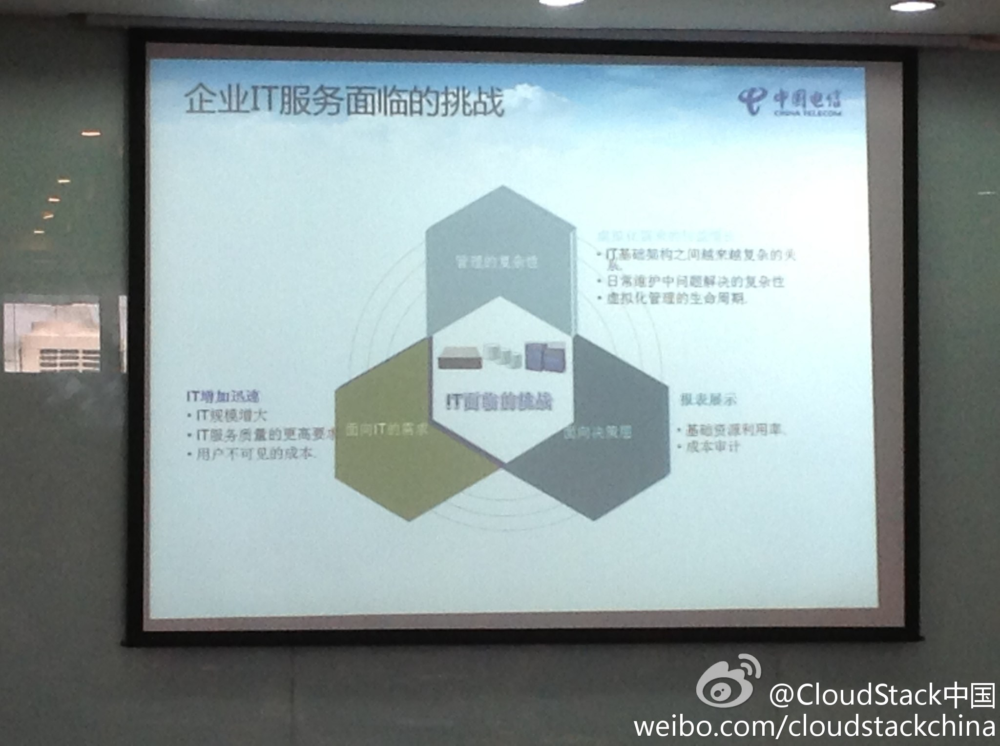
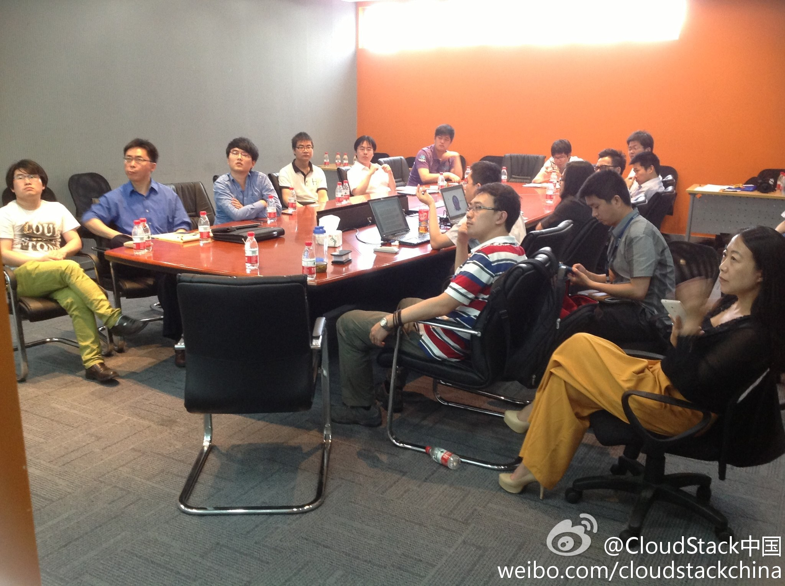

这周在上海收获很多。[呵呵]//@lee-xh:明天要出去了, 下次到上海给大家分享一些国外CloudStack发展的情况. 我会尽量搞到与会者的PPT. 欢迎@Ada李力 参加, 有你在, 增色不少.@CloudStack中国:#CloudStack技术沙龙#魏伟的分享上升了一个高度，我们来讨论企业IT服务所面临的问题！。。。。。。欢迎姗姗来迟的 @Ada李力 @CSDN云计算 还有 很遗憾学辉@lee-xh 不能来现场，多分享些现场照片给你吧！我在:#浦东张江高科软件园# 
 。。。。。。欢迎姗姗来迟的 @Ada李力
。。。。。。欢迎姗姗来迟的 @Ada李力  @CSDN云计算 还有 很遗憾学辉@lee-xh 不能来现场，多分享些现场照片给你吧！
@CSDN云计算 还有 很遗憾学辉@lee-xh 不能来现场，多分享些现场照片给你吧！ 我在:#浦东张江高科软件园#
我在:#浦东张江高科软件园#